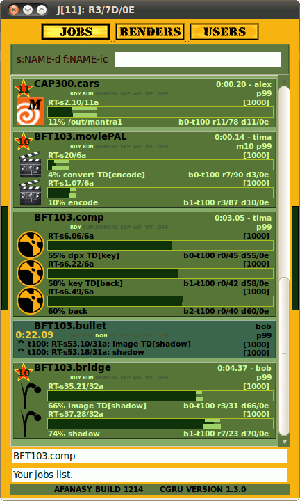

Watch - Minimalistic GUI for Afanasy
Watch - afanasy monitor. It can be in three modes - USER, VISOR and GOD.
- USER ( common mode ) - user can change parameters only of its own nodes - jobs, user and render(s).
- VISOR ( super user mode ) - can do same as user but he change jobs of any user.
- GOD ( super user mode ) - can do anything.
Change any parameter of any user, job or host. Add or delete hosts, users. Restart, shutdown any render host.
To switch user mode you need to type password in active Watch window (you do not need to relogin to switch between modes).
To reset super user mode you can type password again.
Launch script:
$ afanasy/launch/afwatch.sh
Launch command (when Afanasy environment set):
$ afwatch
Super user mode:
Type password to switch to it. You can see and manipulate all users jobs.
Jobs Tab
"Visor" Mode (yellow border)

Default password is "IDKFA"
|
Sort&Filter Control Widget

Right Mouse Button (RMB) Menu

Sort&Filter Control allows you to define items sorting and filtering conditions.
You can choose sorting parameter and direction or disable sorting at all
(disabling is equivalent to empty filter expression string).
Choose filtering parameter and condition (to include or exclude pattern) or disable filtering at all.
When filtering is working Sort&Filter Control highlights its widget background color.
|
"GOD" Mode (white border)

Default password is "IDDQD"
|
|